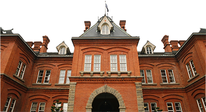
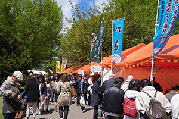
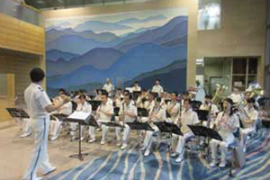
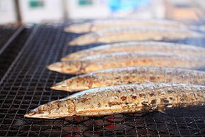

そんなことは、赤れんが庁舎という名前を見れば誰だってわかりますね。
冗談はさておき、そもそも赤れんが庁舎という建物は何故建てられたのか？ という話をします。
かつて北海道は、函館県・札幌県・根室県の３県１局制をとっていました。しかし、どうにもまとまりが悪いし、人口密度もやたら低いしであんまり良いことがありませんでした。
そこで北海道はもう『北海道』として一括りにしてしまおう、ということになりました。その際に、北海道の新しいシンボル、北海道庁として立てられたのが赤れんが庁舎なのです。
大丈夫、今の赤れんが庁舎は旧北海道庁です。屋内にも気軽に入れます。
西洋風の建物なので、赤れんが庁舎が現役だった時代の職員の方々は、なんとなく居心地が悪く働きづらかったことでしょう。やはり、日常的にいるなら普通の建物が一番ですよね。
が、しかし！ 観光客、つまり旅行者にとっては、非日常こそが求めているものだろうと思います。その綺麗な建物は、外観を見ただけでも来た甲斐があったと思うこと間違いありません。そして、入場も無料なので館内にも気軽に入れます。館内はまさしく外国！ と言った感じなので観光地にはピッタリです。
-

北のめぐみ愛食フェア２０１７
9/5(火)～9/6(金)
-

北海道警察音楽隊 赤れんがコンサート
9/22(金)
-

根室サンマ直送市
9/5(火)～9/6(金)